守護母親河，共創嘉生活
課堂上，老師拋出問題：「我們每天經過的那條水，知道它從哪裡來、為何而在嗎？」多數同學對道將圳的歷史與用途不熟悉。我們決定以走讀為起點，沿著圳路記錄地景，觀察水質、生態與人文，發現問題提出解決方案。
道將圳不只是水利設施，更承載「諸羅」的生活與文化記憶。我們希望把「看見問題→試著解決」變成每位在地市民的日常能力。
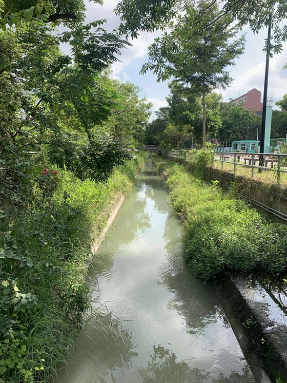
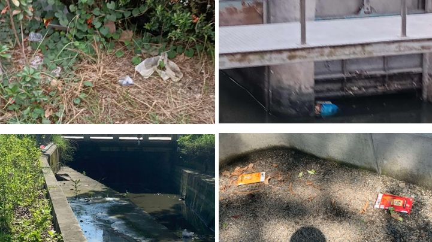
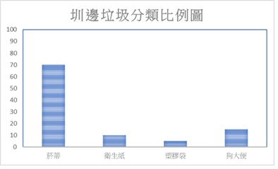
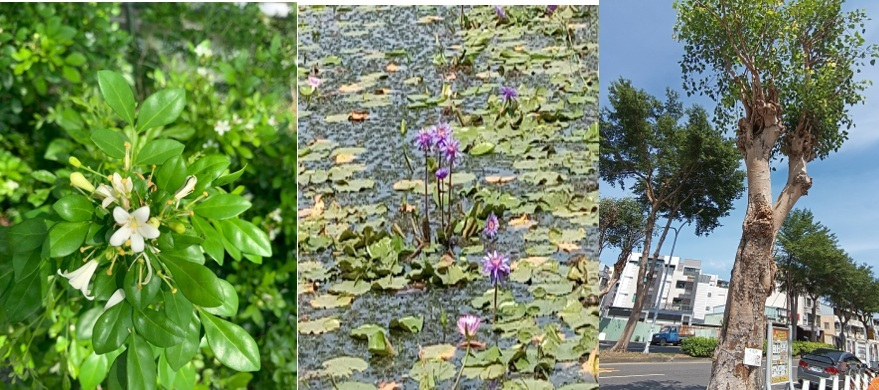
紀錄道將圳水域及兩岸環境的生物多樣性。主要內容包括：肉眼觀察並辨識水面下的魚蝦、兩棲爬行類，以及記錄沿岸的鳥類、昆蟲和植被種類。目的是了解水圳棲地的現況，為推廣地方生態教育及提升環境意識累積基礎資料。
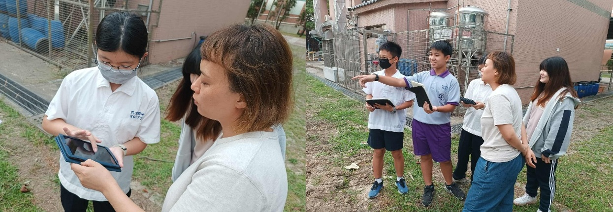
配合學校志工服務：請小志工協助將校園附近河邊的菸蒂、紙、塑膠袋、塑膠；橋頭增設菸蒂回收筒；推動「無痕走讀」。
我們將成立「道將圳小小守護者隊」，開放給所有對環境保護有熱情的學生與社區居民報名參與。
志工撿拾垃圾統計
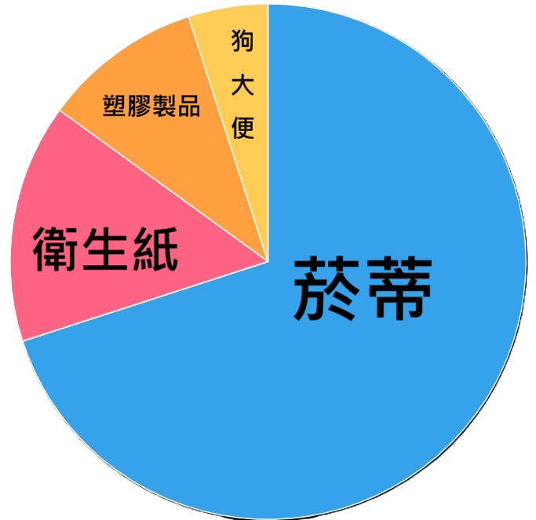
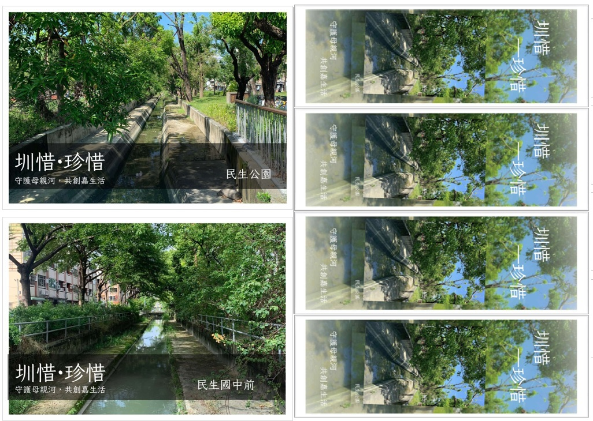
設計書籤與明信片讓老師同學家長索取。
書籤宣傳： 書籤將以道將圳沿線八個採點的插畫或美景照片為主圖，同時在背面寫道將圳相關知識。書籤的實用性與高頻率使用特性，能確保每次使用者拿起書本，都能間接地提醒他們道將圳的存在。
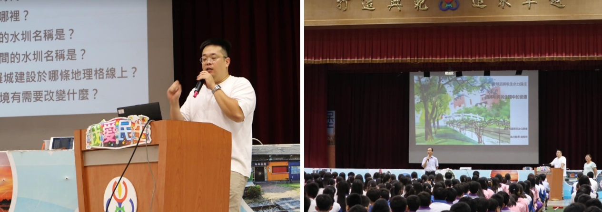
設計網站與APP電子書，讓環境教育周結合走讀導覽、議題探討與成果發表；跨社會、資訊科技領域。
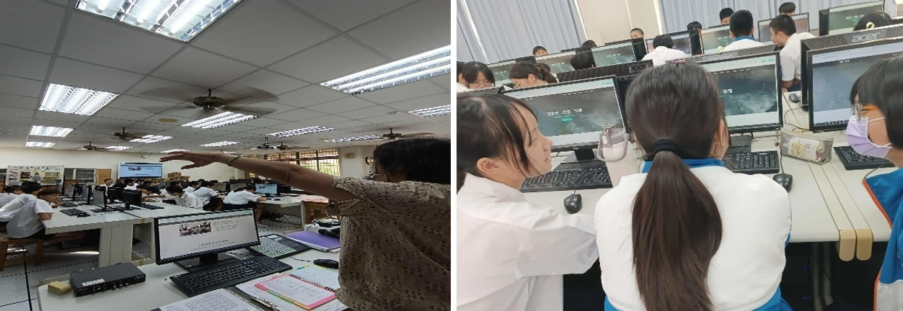
針對道將圳主題，將資料可視化融入電腦課程設計，可以有效地將抽象的程式設計概念轉化為具體的視覺成果，提升學生的學習興趣。。
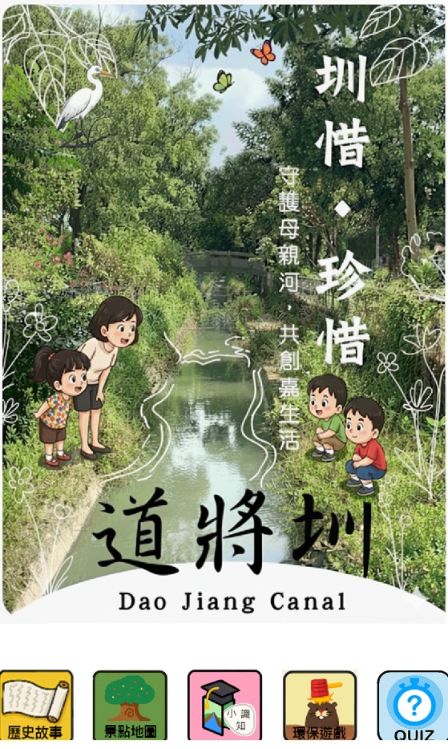
這款道將圳電子書 App 是集文化、導覽與環境教育於一身的行動工具。
它涵蓋了水圳三百年的歷史沿革，並透過景點地圖，指引您走訪渠首工、糯米橋等重要古蹟。
內建的生態小知識與環保問答遊戲，讓您在輕鬆互動中深入了解道將圳的文化價值與生態意義，
是探索嘉義水文的最佳夥伴。
下載道將圳 App（Android）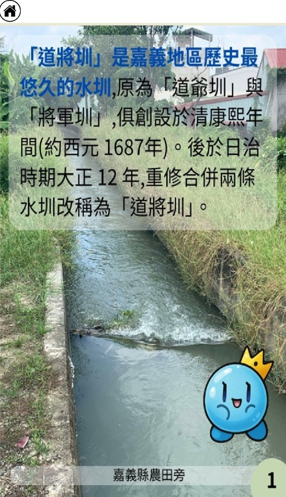
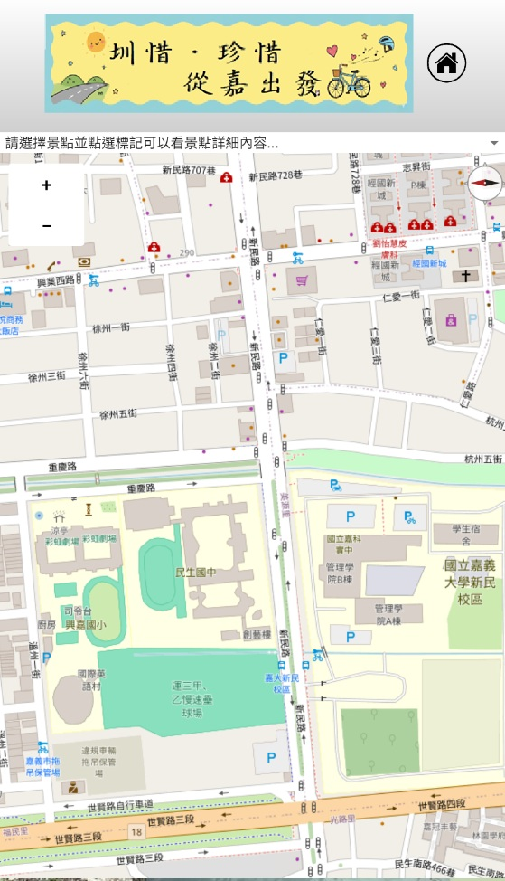
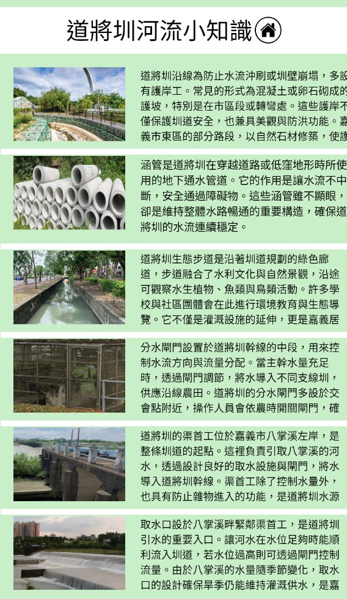
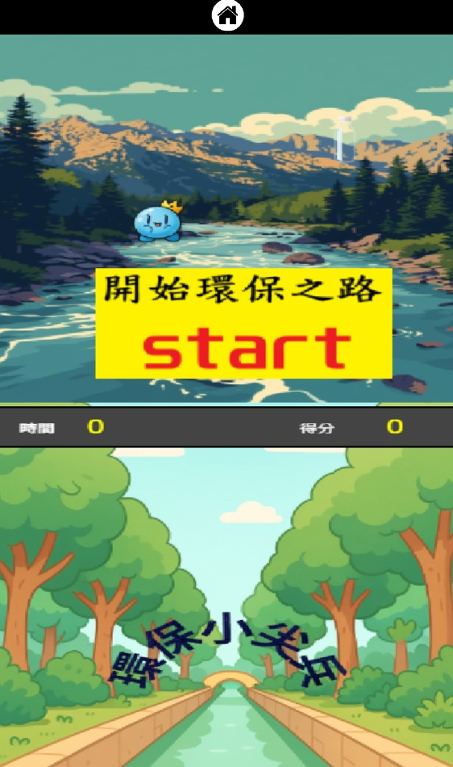
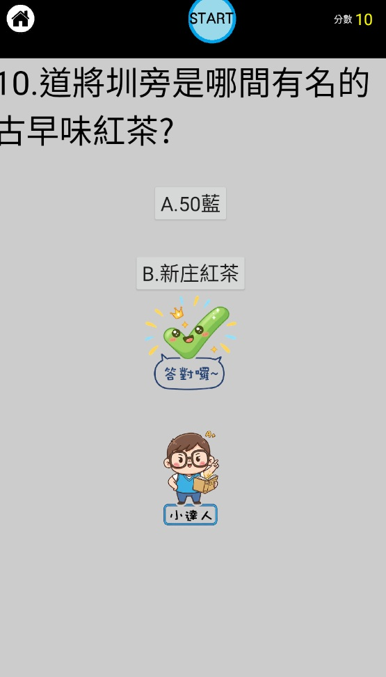
👉 點「開始遊戲」，點擊出現的垃圾就能得分！
勾選你的環保行動：
Certificate of Environmental Commitment
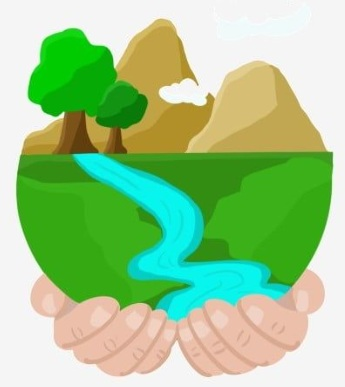
承諾人：（尚未填寫）
日期：（自動帶入今天）
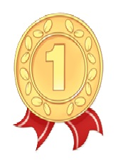